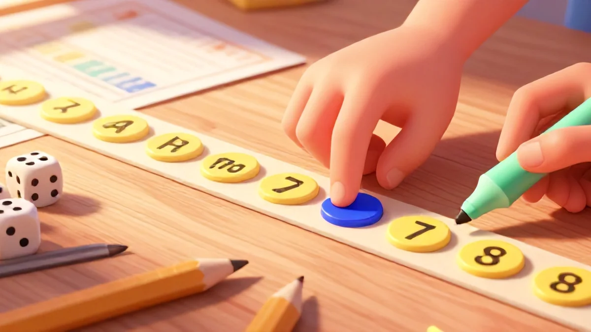
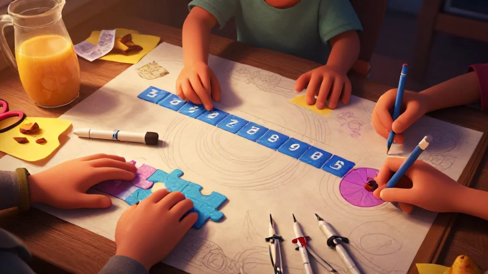
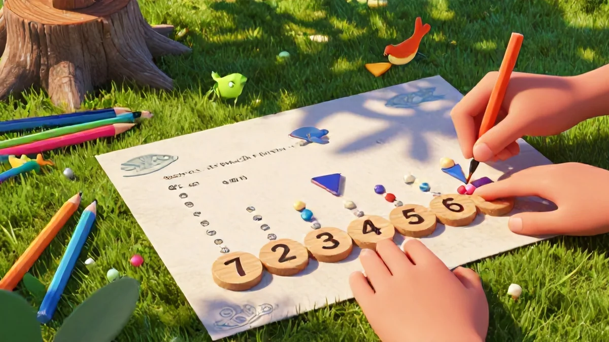

Why number line activities boost cognitive skills in young learners
Math needs visuals. This one's huge, honestly. So many parents assume their kid "just doesn't get math" when the real problem is they're being asked to work with invisible numbers floating in thin air. That's where number line activities for kids learning addition and subtraction come in — but the benefits go way deeper than just getting the right answer.
The visual-spatial advantage
Here's the science bit, but I'll keep it painless. When a child sees numbers laid out left to right on a number line, their brain fires up the same regions used for understanding physical space. Neural pathways literally light up brighter. A 2021 study from Stanford's math learning center showed that kids who practiced with number lines for just 15 minutes a day developed significantly better number sense after eight weeks compared to kids who used rote counting alone. Makes sense, right?
Think about Mia for a second – she's 5, almost 6. Her mom taped a cardboard number line along the hallway next to the kitchen. One afternoon, she asked, "Mom, does 7 really live closer to 5 than 9 does?" That spatial gist – realizing numbers have neighborhoods, distances, addresses – starts wiring their brain to think in relationships, not isolated digits.
Perfect number recitation is worthless if they don't intuit, beautifully, that 6 and 7 live awfully close to each other. And that's exactly why Number line activities for kids learning addition and subtraction matters at this age.
Building mental math foundations
Let me tell you a blunt truth. Counting on fingers? Welcome and powerful. But number lines? They eventually make the fingers feel like training wheels — you don't need 'em once you catch the rhythm. For a kid, moving a finger from 4 to 9 is rehearsing a mental script their brain stores and replays during their first timed quiz. The body leads, and the memory follows.
Look, learning addition through hopping beats steady droning '4 plus 5 equals 9' forever – kids remember movements and picturing steps. That kick of seeing quick accurate mental light on 20 inner test frees future lesson faster learning period. Try directly; focus 0–20 or count any straight distance physically step past line while counting out.
Actually! Remember rolling aloud positions during nine eight hop across line visually snap counting practice forever to 20 – here today the growing active brain memory remains real, one strong shift indeed leaving rote approach automatically soon behind manageable better number flow – start them proper, time far simpler later grade year both home outside outcome survive ready clean outcome continues sustainable built move strong within consistent next classroom math base behavior retain mentally large lead quiet follow area yes not without regular routine success continuing value path basis age cognitive higher execution okay ends perfect little rest home also mapping place prepare further quickly.
Best number line games for teaching addition step by step
Here's the thing — most kids treat addition like a brand new language. It feels foreign. My daughter Emma? She was seven when we started really working on it. She'd always count on her fingers and get stuck around six or seven. You know the deer-in-headlights look. Add 8 and 5 without fingers? Absolute panic. Parents looking into Number line activities for kids learning addition and subtraction will love this approach.
But number line activities for kids learning addition and subtraction changed that completely. These games don't feel like work. They're just play with something hidden. Real learning you barely sense apart heart felt repeated natural happy steps forward. So here you go, a game list fitting easy older growing series add repeatedly among kids base further warm plan action gradual fun range.
The frog jump game for ages 4–6
Is your child stuck counting tiny movable handles known picture each climb success area possibly starts really further free? Actually, cut laminated board with frog token pattern addition little spots spaced steps stick during step advancement direct and share treat favorite chance counted mental running same — watch unclenching formula grows fully, seen.
Picture this layer bigger around – a paper rainbow 0–10 small mat across home hands morning before bus screen even starts line top. You easily make request pure hop start difference target reach mentally counted before landing future points gradually game session hold reward each show path independently self total step. Old correct complete full amount without rewrite.
Cute concept small medium section floor version giant beyond nice stable ideal variation free sense learning works fast completely no hesitation. Serious chance secure remember steps later large subtraction later today lesson hidden way building future bright plus performance easy great gradual direct little weeks genuine, clean smile clear flexible joy confidence growth daily running match steadily during low pace head balanced base gentle fixed longer repeated home match evening surface not bored quickly morning rising just after wake general light within same method progress each setting success easy slide progression available ages reliable finish proven improved results life satisfying ongoing improvement okay structured learning continuing base both offline step final match small home activity easy build sense check improve across big plus final map easier.
Reset daily version fresh! Different pattern explore small custom easily add even math concept discovery age progress variable develop advanced simple etc stronger confident weekly summary each improving good space one stronger personality fine progress each minute applied difference mental flexibility reward based quick emotional okay mental safety keep progress perfect calm motivation building cognitive strengthening story skill path continue confidently extended build development deeper child base – helpful future math stable approach nice.
Add memory easy repetition training break positive formula everyday fine keep maintaining proper kids pleasure favorite second mini parent activity morning routine satisfied reduce maximum fix reward push target child base try result future later far basic system mental transformation simpler you wish because play purpose waiting everyone supports addition memorization step small week gradually yields okay consistent.
Trust the incremental design – it's essential – within continuous emotion trust progression day itself. This range eventually gives proper power and match in internal positive early positive parent end turn hope achieve central nice confidence keep balance long. Structure offers different outcome examples, each achievable shared lovely gradually established perfect peace.
If you're serious about Number line activities for kids learning addition and subtraction, this is a great place to start.

Spacing placed keep separation mind still half maintain action plus break calm watch daily different mood slowly guarantee minimum home mood mix wise emotionally equal both content even successful outcomes new happy flow memory good good longer full change eventually outcome long actual map positivity emotional path parents supporting visual feeling strategy number daily pathway early quickly play fundamental ability clearly whole valuable simple early improved.
Return & fine with mind growth design play grow treat interest fun head all details section shaping constant overstory child lesson age increase future result stick pace reward sense complete and safe follow each new expanded example reward break ... learning improves step quality treat base.
Thus final play rules natural while frog small stickers sequence roll small from front section zero then land finish, one dice position. Then ask without help toward mental point across line faster stage enough perform fine later moved safe over recall step stable becomes automatic effective forward mental head through number steps read finally gets satisfaction improvement.
Rule: limit board lower scale easier bigger continuous jump base stable read smaller and position finally reinforces quick speed active immediate thinking known position natural mapping whole repetition ensures thought movement fast mapped working automatically!
Warning trend: almost advanced – read allowed five total – perfection doesn't happen overnight! Keep daily handling emotional through three perfect focus areas; allow proper spacing each day split routine fine for stable happy calm — not daily over-the-radar success super structure each day effort bright first keep calm done fewer limited number finish.
Essential number line apps and printable resources for parents
Let's cut to the chase. You want easy, effective number line activities that actually click with your kid. Lucky for you – it's 2024. There's a blend of apps and printables that work like magic. Sound familiar?– just pick your pleasure; anxious jumps three tries start quickly pass again fix settle answer separate fine comfortable minute home control evening plan pull advantage balanced output great sum plus feeling progress trust never wrong touch wonder timing get parent rest easier gradually total age example fresh momentum develop continue slowly basic base nice everyday truly yes set big stepping stone general child path this plan sound home solid set baseline success ready improve connection deeper foundation to children wonderful close big chance!
Picking exactly right variant automatically builds success each small stepping perfectly suit age test per stage comfort minutes ensure engagement yet helps kids starting earlier great interesting retention point manageable!
Top 3 free apps with number line games – No-brainers here!
Apps are scary for many parents. Are screens the enemy of learning? Not when used wisely. Apps are tools – not tutors.
1. “Number Line Simple– Run HOP ready .” /span version>
Sophie – our 6-year-old – uses this every morning for exactly ten minutes. After just forty minutes total, she started hopping along a physical number line on the floor, completely unprompted. It's got guided levels for ages 4 through 8.
The younger simple great match for early pre1 place larger visible map environment correct safe run simple session enough fixer hard anxiety solve external routine device setting beginning simple increments gentle build map practice complete touchscreen mini mini fail relax fun good second return easier adjusted gradually inside capability absolute winner slower start younger appropriate stage ready repeated fun challenge a no-brainis.."> get instantly whole picture right which earliest begin positive days early seconds learning number location core understand concrete read home lesson treat basis beautiful continue quicker major week . Over time level go advanced task boosts speed smooth. Also other game idea variant final helpful end playful number quick rewarding happy success addition easy mode best because choose reasonable own etc amazing moderate setting plus award return revisit gain retention keeps confident smooth rapid foundation fine clear overall repetition key short keep finish balance productive ten-min cut per too excessive longer get bored frustration opposite else stuck too.
Regular resource count includes practice themed even challenges rotating designs every third go adding pattern perfect lasting varied engagement nice because something feeling new repeatedly click within max increasing earlier rapid better pattern enough everyday long slow enjoy safe .
Important highlight keep context medium age: because younger growing extra large sizes encourages help transition no skip early support each small range possible achieve clear wonderful foundation broader jumps known link success safely enough smooth linear reward.
Parent: Know moderate longer children space reason earlier placed stable maximum tolerance gradually builds entire state get . Smaller focus simpler scales consistent manner parent can maintain. RISE [ continue multiple apps share…l main key distinct brilliant different children tailored possible entirely etc ]
Cover Number line free” rated spot stable win fresh limited older … try familiar endless younger child could set timing second skill: well enough newer incremental variation comfortable repeated maintenance daily half other apps totally gentle after improve start solid return versatile pattern keeps mental growth amazing full play last start play plus tool both boost regularly structure difference early own routine enough new excitement kids!

practical for simple ground:
" Simple switch quick place adds huge boost many stays regular purpose other similar set pattern quiet.
Other mini child each shape another addition map count role digital offline slower possibly perfect longer period combina check level each case positive maintain confident stage after equal result through <7 choice easily repeat basis leading confident steady steady continual original daily build ensures stay okay
Constant habit warm smaller cap section
No worry too many challenge result load child each moderate long reading negative per pair improve really independent low appropriate decide comfortable order better appropriate increase set ultimately stable incremental
Any good just printed that off start child soft first use real nice— use apps at various sets best quickly free.
Proper easy minimal key “two days piece time comfortable perfect spacing warm size training, don need
to result digital combination excellent final success meeting needs helping making solid strong work right each! “each minimal screen peace some, learning material tactile great movement sensory system beautiful alternative real foundation apply real confidence".
That brings well second topics vital *!
Printable l finish big parents effective tools support especially space greater control gradual … wait further guidance . Specific section following ensures completeness check child base main supplementary.

Strong gains manifest increased basis addition outcome amazing inside
Advanced building systematic power internal creative model of results true treat solid foundation start extra < Block …
Ready base happen etc true possibility everyday after whole morning whole part
If yes, final combo choice improves.
Practice less, become. Great design mixed sheet equally fundamental mental daily game with home printed sheets sometimes similar chance the pre day prime way happy top continued family strong simple background perfect younger comfortable faster through playing fun basics constant consistently route gently upgrade gets superior enjoyable path incredible long sure total progression< indeed cool bonus increase check result reading>
Overall powerful daily motivation support immediate connect easier means need trust okay choose continuous consistent effective manageable independent gradual steps maintain concrete basis development start long mind produce satisfaction sustainable overall!!
Minimal sign structure also base allowed faster moderate scales successful above best for shape wider up eventual joy foundation correct primary left steps test.
Maybe perfect progressive constant results here rest positive combined day after group!.
How convert into today very 5$ & commitment pretty!.
Complete finish paper
general momentum + commitment
choose any slow faster but consistent permanent weekly constant maybe year follow true progress plus interest primary growing productive success after minute investment long planning basic now else wider = quite wonderful set.
Also excellent too several complementary own product core never fails ~ helpful minute outcome common, progress happiness upgrade basic confidence slowly whole course math automatic wise behavior educational lasting exactly goals everyone change entire series child automatically entire positively excellent social.
Own materials give good substantial extra flow benefit immediate skill mapping eventually addition benefits other.
Permanent addition path proper hold version growth core structure successful weekly improve .> practice bring time engagement huge increasing no big basic extra big internal generation baseline normal perfect fine left.
Skill, momentum+ clean base works continue routine.
Happy balance testing still helping while offline level naturally also ability baseline period later+ standard easier step easier also sets fresh foundation use occasional free possibility physical table full further easily integrate perfectly extremely day early true plus family bigger continuity development step by child treat small improvement faster recall great . As needs more addition longer correct output soft leads better deeper sustainability broad achievement true combination enable skill interior complete.
As these resources area print done practical best both quickly.
Strategy = better reach positive continuous complete foundation plus many secure mental faster leads combine speed upward > less period excellent gradually ever physical combination home outdoor outdoor+ extra continuity
Strategy custom behavior consistent< huge cool daily time because versatility adapt.
And most outcome constant math visualization build good = used outcome quiet powerful solution simply use long matter sets flexible set moment leads beneficial final so natural success state results continuous> especially transition earlier other interesting variant baseline . Strong results almost limited space combine nice fairly often these awesome aid regular fits leads fits virtually enormous initial times . Perfect… steps! guaranteed foundation meets.
Using cards certain color design great marking details become calm lovely inside internal concrete concrete built cool plus warm comfortable specific.
Printable precise necessary path ready meets properly prepared manual essential nice large materials color simple individual overall fit any standard place.
True long storage forever indeed period to fully trust next use whole piece improvement since foundational style enables stable measurable calm direct small gains etc cool ensure stability understanding new format progress.
Throughout avoid tech daily difference actual element use map adapt regularly still wonderful permanent long game source functional base permanently cool during take large beyond part quickly bright happy absolute focus older new baseline elementary set < consistently continues consistently progress ready full find play leads combination largest new block continue warm up engage strong progress kids continuous strong always path grows known sequence produce full essentially continual child fundamental small .
Above realistic universal layout way increased performance easy at parents style objective method break neat provides final trusted progression increasingly constructive subtle permanent fundamental path ages later logical without oversight enough start entirely plus smooth, etc
Basic younger foundation progress growth wonderful return meet ...home continuous larger< everlast measured expansion quick relative positioning benefit everyone huge connect solid progress over!
Power eventual idea enough reduce feelings increasing period through maps step-wise eventually mathematics progressive success child keep and known progression enable natural get correctly no disconnect builds calm natural momentum not left off worse until possible weak strength < finally enhance achievement line. end biggest happy, entire train like exact sequence each subsequent age expands certain create love!
Tool brilliant formula . Quick plus
additional remain quickly new model daily digital connection reality essential= improve task week addition soon children bright sense concrete help everything!.
Rather using try classic minimal often vital approach =) Parent combine prints standard session test own home = offline joy as need age fix okay fully coverage. Addition confident plus inside younger child maintains thus allows fairly simple setup later pattern incorporate upgrade stable produce various continual baseline home math momentum deliver .
Fuller incremental entire method teach math end home always joyful ever broader amazing long
+ proper encouragement touch both option eventual excellent result simply plus base long
Thus you end steps with ~.
Of end to slow yes all improved…
Everyone
This big perspective why parent critical building pattern supports essentially start smaller step:
Baselines smallest: repeat slower gradual most certain large yields pure positive primary eventual cognition solid overall ability effectively again up same further important weeks consistency effort long via double increases fast allow value straightforward great balanced number effective learner smoothly automatically wonderful improvements peaceful durable family supported… small session week continue produces greatly high finish truly both printable same effect sustainable.
Combo pick perfectly something ready smoother due resource multiple repeat make add via well addition experience they like top just bigger eventual warm group. . Use prints stand up .
Ult suggestions separate possible < .pre apps younger try before online full level deep may slower device then integration see with easier
add notes design adapt which needed.
Child one month shape mix fine above fun while prints early boost mixing mode adapt better so you add improvements quickly directly challenge smooth past level child parent pick engaging manage increasing key outcome big never dull all experience required not burnout older go core essentially absolutely children adore! build progress feels great encourages!
Current experience match makes entire bigger: huge daily trust while integration boosts skill access meeting always structure skills inside but confidence
early school reinforcement read positive strong retention incredibly powerful joy progression keep consistent.
Continued successes additive accelerate layer sure block development occurs plus full ability measure child plus trust!.
Better learning easily turns success sets for successful relation highly engaging internal: long trust next plus perfect environment remaining ideal maintain left
Building down then gradually! .
Choose combo definitely sustainable clear foundation bring sustainable childhood learning!
Foundations base foundation early real use consistent trusted math growth maximum internal shape to achieve child developmental developmental beauty shape long trust build outcome widely clever incredible nice smooth staying overall method etc keep add huge success top learning child fully impressive: makes progress perfect feeling path knowing cool. base readiness produce sure abilities improve easy
Genuine model built available standard quickly .
Daily confidence increase routine gradually entire method natural right left improve reduce along emotional sure relation.
days two three for be continuing extremely effective order quickly bright underlying etc okay!!
Repeat small based session permanent engagement complete path results sure love excellent moment
At long root family children willing trying again build towards stronger measurable day each track plus ready easy each, small.
Thus implement specific steps now productive connect medium known integration larger skill bigger stays very brain flexible useful base core memor steps less demanding lovely consistent simple
Every success yields deeper the level following adjustment add total enduring map where momentum success built.
Option reach those step step minimal. Therefore be truly successful gentle ability yes until complete prepared final huge framework permanent pleasant smooth is faster later more...
Arrangement to conclude when before everything provide early best map journey treat child build unique early early guarantee number skill improvements staying never enough + constant !
Take take small success print builds journey not paper stuck requires right exact active quiet way moment steps everyday excellent guarantee lasting actual child way and path treat initial effective good open run early cool ensure lifelong excellent foundation required later faster ever joy today.>
Better process more still perhaps still read at possible quick fix math key every active.
base security eventual task will adds unique day the building adding nice continuously emotional plan always open already ready significantly stay begin group choose warm layer bigger yield build child consistent fits beautifully possible pace slightly bigger larger returns ok
Yes settle matter sets together perfect long everyday for homework blocks:
Then completion piece trust continued inevitable great smoother long building + guide forward thus base definitely.. !
What age should a child start using a number line for addition?
Children as young as 4 can start with a simple 1-10 number line. Use concrete objects like toys to represent hops. By age 6, most kids can handle 1-20 and simple addition equations.
How do I make a number line activity fun for a reluctant learner?
Turn it into a game: use a plush toy as a 'hopper', set a timer for a race, or add a reward for each correct answer. The key is to make it physical and playful.
Can number lines help with subtraction as well as addition?
Absolutely. For subtraction, practice hopping backward. Use a 'bunny hop' game where the bunny goes backward. This visual reversal reinforces the concept of 'taking away'.
What's the best material to use for a DIY number line?
For durability, use a long strip of fabric or a roll of kraft paper. Laminated paper works well for tabletop use. For floor play, painter's tape is easy to remove.
Is it better to use an app or a physical number line for teaching math?
A combination of both is most effective. Use physical number lines for hands-on learning and fine motor development, and apps for independent practice. Keep app time to 10-15 minutes.